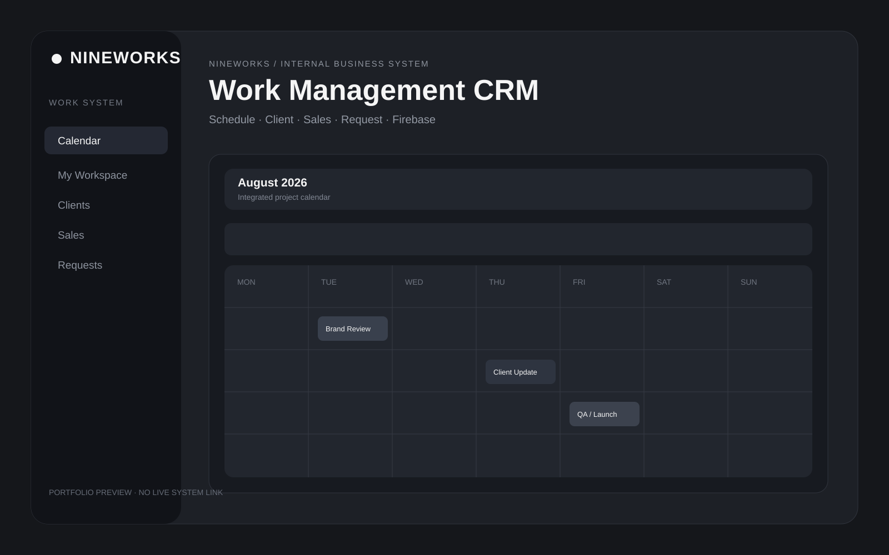
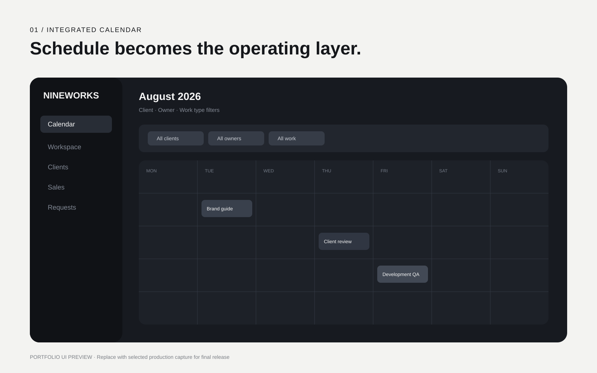
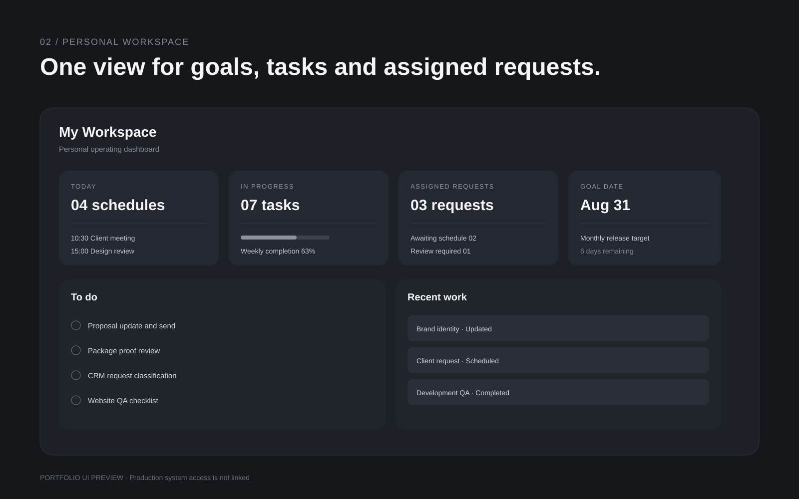

Project Overview
흩어진 업무를 하나의 운영 흐름으로 연결했습니다.
프로젝트가 늘어날수록 일정, 클라이언트 요청, 담당 업무와 영업 진행상황이 서로 다른 채널에 쌓이기 시작했습니다. 단순히 메뉴를 많이 만드는 대신 요청이 들어오고, 담당자가 정해지고, 일정으로 전환되고, 완료된 기록이 다시 클라이언트 이력으로 남는 실제 업무 순서를 기준으로 시스템을 설계했습니다.
나인웍스 내부에서 실제 사용하는 시스템을 기반으로 기획과 UI, 프론트엔드, 데이터 구조까지 함께 구축한 프로젝트입니다.
Integrated Calendar
업무의 중심을 캘린더에 두고 프로젝트 정보를 함께 연결했습니다.
메인 캘린더에서는 날짜만 확인하는 것이 아니라 클라이언트, 담당자, 업무 분류와 진행 일정을 함께 확인할 수 있습니다. 개별 업무가 누구에게 배정되어 있고 어느 시점까지 진행되어야 하는지 한 화면에서 파악하는 것을 목표로 구성했습니다.
일정 등록 단계에서도 클라이언트와 업무 유형을 연결해 이후 클라이언트 관리와 개인 업무 화면에서 동일한 데이터를 다시 활용할 수 있도록 했습니다.

My Workspace
전체 운영 데이터와 개인이 오늘 해야 하는 일을 분리했습니다.
마이 워크스페이스는 오늘 일정, 진행 중 업무, 목표 일정, 해야 할 일과 배정된 요청을 개인 기준으로 모아 보여주는 영역입니다. 회사 전체 데이터를 보는 CRM과 실제 실행을 위한 개인 업무 화면을 구분해 정보의 복잡도를 줄였습니다.
담당자는 여러 메뉴를 이동하지 않고 자신에게 필요한 업무와 요청을 우선적으로 확인할 수 있습니다.

Client & Request
클라이언트 요청이 실제 일정과 업무로 이어지도록 구성했습니다.
전화, 메신저, 이메일 등으로 들어오는 요청사항을 별도의 요청 데이터로 기록하고 담당자와 업무 분류를 지정한 뒤 일정으로 연결할 수 있도록 설계했습니다. 완료된 업무는 다시 클라이언트별 진행 이력으로 남아 이전 요청과 작업 내용을 확인할 수 있습니다.
영업 영역에서는 신규 문의, 제안 진행, 다음 연락과 계약 전환 상태를 별도로 관리해 기존 클라이언트 운영과 신규 영업을 하나의 시스템 안에서 함께 관리합니다.

System Structure
가벼운 웹 기반 구조로 만들고 실제 운영에 맞춰 계속 개선할 수 있도록 했습니다.
HTML, CSS, JavaScript 기반의 프론트엔드와 Firebase Authentication, Cloud Firestore를 중심으로 구성했습니다. Calendar, Workspace, Client, Request, Sales 각각의 기능을 독립적으로 관리하면서 공통 데이터를 통해 서로 연결되는 구조입니다.
실제 운영 시스템에는 내부 클라이언트 정보와 업무 데이터가 포함되어 있어 포트폴리오에서는 시스템 접속 링크를 제공하지 않습니다. 공개 화면 역시 필요한 UI와 기능 구조만 선별해 소개합니다.
Project Credit
- Project
- NINEWORKS CRM
- Category
- System · CRM · Internal Tool
- Design
- NINEWORKS
- Development
- NINEWORKS